| «адание N2 |
| –аспаковка |
| ƒано: ‘рагмент данных, запакованный следующим образом: сначала копируетс€ некоторое количество байтов из начала, затем определенное количество раз повтор€етс€ середина, и затем копируютс€ оставшиес€ байты. ќсуществить реализацию следующего класса: class packedBuffer
|
 |
| Ќеобходимо: Ќаписать на C++ реализацию приведенного выше класса, при этом функци€ int packedBuffer::getNextBlock(void* dst, int size) должна копировать следующие size байт из запакованного массива в пам€ть по адресу dst и возвращать количество реально скопированных байтов или ноль, если копировать больше нечего. |
| ѕримечание: “ипичное использование данной функции: pBuff=new packedBuffer(packedData,
packedDataSize, introSize, loopedSize, loopNumber); |
|
|
Text and images are (c) 1997 by Snowball Interactive Entertainment, Inc. All rights reserved. |